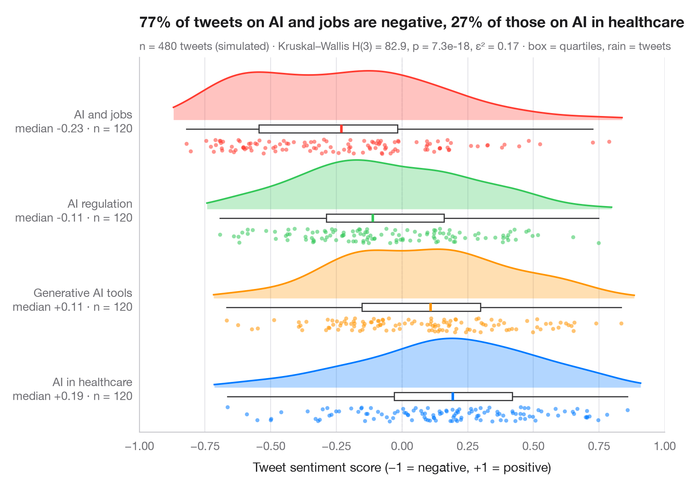

Graphique en nuage de pluie
Demi-violon, boîte à moustaches et points bruts par groupe, tracés à l'horizontale.

Un graphique en nuage de pluie (raincloud plot) superpose trois vues des mêmes données : un demi-violon (le « nuage ») montre la densité, une fine boîte à moustaches donne la médiane et les quartiles, et les points dispersés en dessous (la « pluie ») montrent chaque observation. Rien n'est caché : la bimodalité, les valeurs aberrantes et les petits échantillons sont tous visibles.
Les données sont les 964 mandats achevés de chefs de gouvernement entre 1946 et 2008 sous trois types de régime, tirés des données Democracy and Dictatorship fournies avec lifelines (lifelines.datasets.load_dd()) ; les dirigeants encore en fonction à la fin des données (mandats censurés) sont écartés. Les densités proviennent de scipy.stats.gaussian_kde, et le sous-titre rapporte un test de Kruskal–Wallis (scipy.stats.kruskal) — un test de rangs, adapté à des durées asymétriques — avec ε² comme taille d'effet.
Le code et le texte à l'intérieur des figures sont en anglais.
import matplotlib.pyplot as plt
import numpy as np
from lifelines.datasets import load_dd
from scipy import stats
# Data: years in office of leaders whose spell ended, by regime type
df = load_dd().query("observed == 1")
groups = {"Parliamentary Dem": "Parliamentary democracy",
"Presidential Dem": "Presidential democracy", "Military Dict": "Military dictatorship"}
data = [df.loc[df.regime == g, "duration"].to_numpy() for g in groups]
palette = ["#007AFF", "#FF9500", "#34C759"]
# Kruskal–Wallis test + epsilon squared
H, p = stats.kruskal(*data)
n = sum(len(d) for d in data)
eps2 = H / (n - 1)
fig, ax = plt.subplots(figsize=(8, 5.2))
rng = np.random.default_rng(7)
for i, (d, c) in enumerate(zip(data, palette)):
# Cloud: half violin above the baseline, scaled to a fixed height
grid = np.linspace(d.min() - 0.5, d.max() + 0.5, 300) # trim the cloud near the data
dens = stats.gaussian_kde(d)(grid)
ax.fill_between(grid, i, i + 0.55 * dens / dens.max(), color=c, alpha=0.3, lw=0)
ax.plot(grid, i + 0.55 * dens / dens.max(), color=c, lw=1.4)
# Box: median and quartiles just under the cloud
ax.boxplot(d, positions=[i - 0.1], widths=0.09, vert=False, showfliers=False,
patch_artist=True, boxprops=dict(facecolor="white", edgecolor="#3A3A3C", lw=1),
medianprops=dict(color=c, lw=2.2), whiskerprops=dict(color="#3A3A3C"),
capprops=dict(visible=False))
# Rain: jittered raw points below the box
ax.scatter(d, i - 0.3 + rng.uniform(-0.08, 0.08, len(d)),
s=12, color=c, alpha=0.55, lw=0)
ax.set_yticks(range(len(groups)), [f"{g}\nmedian {np.median(d):.0f} yrs · n = {len(d)}"
for g, d in zip(groups.values(), data)])
ax.set_ylim(-0.5, len(groups) - 0.3)
ax.set_xlim(0, 36)
ax.grid(axis="x"); ax.grid(axis="y", visible=False)
ax.set_xlabel("Years in office")
share = [np.mean(d > 10) for d in data]
ax.set_title(f"{share[2]:.0%} of military rulers stay over 10 years, "
f"{share[1]:.1%} of presidents", pad=26)
ax.text(0, 1.02, f"Kruskal–Wallis H(2) = {H:.1f}, p = {p:.3f}, ε² = {eps2:.2f} · "
"cloud = density, box = quartiles, rain = leaders", transform=ax.transAxes,
fontsize=9.5, color="#6E6E73")
plt.show()
Les figures utilisent le style PyStatlas (facultatif) : ajoutez plt.style.use("pystatlas.mplstyle") pour obtenir exactement le même rendu.
Source des données
- Democracy and Dictatorship: leader spells, 1946–2008. Cheibub, J. A., Gandhi, J., & Vreeland, J. R. (2010). Democracy and dictatorship revisited. Public Choice, 143(1–2), 67–101. https://doi.org/10.1007/s11127-009-9491-2
202 countries; distributed with lifelines (lifelines.datasets.load_dd).
Les exemples illustrent des méthodes statistiques. Leurs titres décrivent ce que chaque figure montre dans ces données précises — souvent un échantillon restreint, daté ou partiel —, et non la position de l'auteur sur la question de fond. Pour l'interprétation, le contexte et la qualité des données, reportez-vous aux sources originales citées ici.
Comment citer
PyStatlas est créé et maintenu par Thierry Warin. S'il vous a été utile dans vos travaux, merci de le citer.
Warin, T. (2026). Raincloud plot. In PyStatlas: The Python Gallery of Statistical Graphics. https://warint.github.io/pystatlas/distributions/raincloud/
@misc{warin2026statlas,
author = {Warin, Thierry},
title = {PyStatlas: The Python Gallery of Statistical Graphics},
year = {2026},
howpublished = {\url{https://warint.github.io/pystatlas/}},
note = {Source code: https://github.com/warint/pystatlas}
}Plus dans Distributions

Histogramme avec densité
Histogramme, densité par noyau et courbe normale ajustée, avec statistiques de forme.
ggplot2::geom_histogram() + geom_density()
Graphique en crêtes
Courbes de densité qui se chevauchent pour comparer une distribution entre de nombreux groupes.
ggridges::geom_density_ridges()
Comparaison de fonctions de répartition empiriques
Fonctions de répartition empiriques de deux groupes, avec l'écart de Kolmogorov–Smirnov.
ggplot2::stat_ecdf()